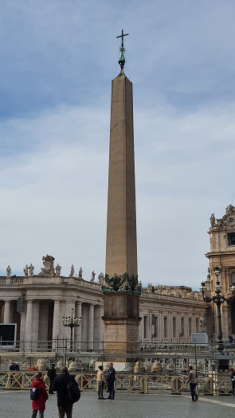
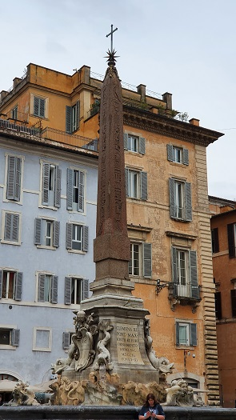
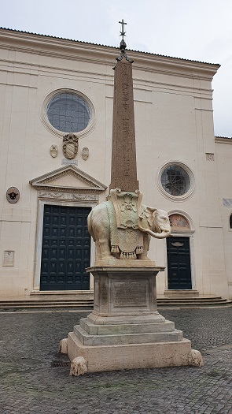
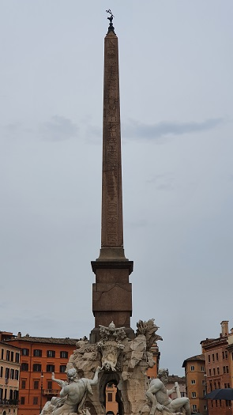
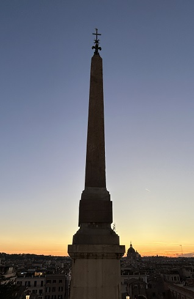

|
Obeliscos
Hay ocho obeliscos en Roma sustraídos de los templos del Antiguo Egipto: - El Lateranense se halla en la Plaza de San Juan de Letrán, mide 45.70m
con la base. Pesa unas 230 toneladas. Proviene del templo de Amón en Karnak llevado a Roma en el 357 para decorar la spina del Circo Máximo.
 -
El Flaminio ubicado en la Piazza del Popolo tiene una altura de 36.50m
con la base. Procede de Heliópolis. Fue llevado a Roma por Augusto en el
año 10 a.e.c. con el obelisco Solare y fue erigido sobre la spina del
Circo Máximo.
 - El Minerveo en Santa Maria sopra Minerva mide 12.69m con la base. Provenía de Sais. Diocleciano lo trasladó a Roma para el cercano templo de Isis.
 -
El Dogali se halla en las Termas de Diocleciano y mide 6.34m. Procede de
Heliópolis, fue trasladado al Templo de Isis en Roma
Cinco obeliscos fueron realizados en Egipto en el época romana bajo pedido o los hicieron en Roma copiando originales egipcios: - El Agonalis en la Piazza Navona con unos 30m de altura, copia encargada por Domiciano y erigido en el Templo de Serapis. Trasladado al Circo de Majencio por Majencio.

-
El Quirinal en la Piazza del Quirinale de 28.94m con la base, fue erigido
en el flanco oriental del Mausoleo de Augusto, emparejado con el obelisco
Esquilino de 25.53m de altura fue erigido en el lado oeste del Mausoleo
de Augusto, emparejado con el obelisco Quirinal.

|
| LA VIDA DIARIA | HISTORIA | CAÍDA | CRONOLOGÍA |